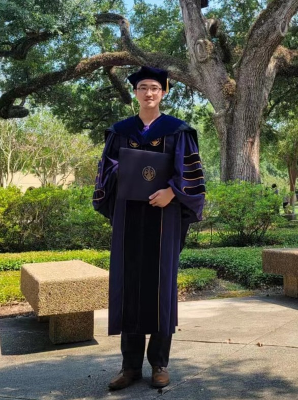

"Genius is patience." - Isaac Newton"天才就是耐心。" —— 艾萨克·牛顿

News新闻动态
[10/20/2026] Congratulations to Yilan Li for winning the First Prize (Jiangsu Division) in the 8th Global Campus Artificial Intelligence Algorithm Elite Competition![10/20/2026] 恭喜李熠兰荣获第八届全球校园人工智能算法精英大赛江苏赛区一等奖！
[09/02/2026] Congratulations to Ziyuan Tang, Jinghui Huang, and Honghai Yi for winning the Second Prize (Jiangsu Province) in the 5th Jiangsu College Intelligent Robot Creativity Competition![09/02/2026] 恭喜唐梓源、黄金辉、易鸿海荣获第五届江苏省高校智能机器人创意大赛江苏省二等奖！
[08/31/2026] Congratulations to Honghai Yi, Ziyuan Tang, and Jinghui Huang for winning the Second Prize in the National Finals and the First Prize in the Jiangsu Division of the 2026 RAICOM Robot Developer Competition![08/31/2026] 恭喜易鸿海、唐梓源、黄金辉在2026睿抗机器人开发者大赛（RAICOM）中荣获全国总决赛二等奖、江苏赛区一等奖！
[08/31/2026] Congratulations to Jinghui Huang, Ziyuan Tang, and Honghai Yi for winning the Second Prize in the National Finals and the First Prize in the Jiangsu Division of the 28th China Robot and Artificial Intelligence Competition![08/31/2026] 恭喜黄金辉、唐梓源、易鸿海在第二十八届中国机器人及人工智能大赛中荣获全国总决赛二等奖、江苏赛区一等奖！
[06/30/2026] Congratulations to Xiaoyu Wang for winning the National First Prize in the 2026 "Huaqing Cup" National College Student AI Digital Future Innovation Challenge![06/30/2026] 恭喜王小禹在2026"华青杯"全国大学生AI数字未来创新挑战赛中荣获全国一等奖！
[06/19/2026] Congratulations to Ziyuan Tang, Jinghui Huang, Honghai Yi, and Xiaoyu Wang for winning the Second Prize (Jiangsu Province) in the 18th Anniversary Elite League of the National 3D Digital Innovation Design Competition![06/19/2026] 恭喜唐梓源、黄金辉、易鸿海、王小禹在全国三维数字化创新设计大赛18周年精英联赛中荣获江苏省二等奖！
[05/21/2026] Congratulations to Sixian Hong for receiving a national-level College Students Innovation and Entrepreneurship Training Program project, and to Zhikai Yang for a provincial-level (Jiangsu) project![05/21/2026] 恭喜洪思贤的大学生创新训练计划项目获国家级立项，杨智凯的项目获江苏省级立项！
[05/10/2026] Congratulations to Sixian Hong for receiving the MCM/ICM Honorable Mention![05/10/2026] 恭喜洪思贤在美国大学生数学建模竞赛（MCM/ICM）中荣获二等奖（Honorable Mention）！
[04/10/2026] Congratulations to BaiWenjie Zheng for receiving admissions from Johns Hopkins University, New York University, Boston University, Rice University, and University of Southern California in Computer Science![04/10/2026] 恭喜郑柏文杰获得约翰霍普金斯大学、纽约大学、波士顿大学、莱斯大学和南加州大学计算机科学专业录取！
[03/10/2026] Congratulations to Xiaoyu Wang for his paper being accepted by the 9th International Conference on Machine Learning and Machine Intelligence held in Tokyo, Japan![03/10/2026] 恭喜王小禹的论文被在日本东京举行的第九届机器学习与机器智能国际会议录用！
[03/04/2026]Dr. Guo was elected as an outstanding teacher of the Department of Intelligent Science and Technology for the year 2026.[03/04/2026]郭老师当选2026年度智能科学与技术系优秀教师。
[03/03/2026] The paper "Self-Attention-Enhanced Multi-Agent Deep Reinforcement Learning for UAVs Target Search in Obstacle-Dense Environments" by Miu Liu, Longbiao Xie, Long Xiao, and Shaopan Guo has been accepted for publication in the IEEE Transactions on Aerospace and Electronic Systems.[03/03/2026] 刘淼、谢龙彪、肖龙和郭少攀的论文《Self-Attention-Enhanced Multi-Agent Deep Reinforcement Learning for UAVs Target Search in Obstacle-Dense Environments》被 IEEE《航空航天与电子系统汇刊》录用发表。
[02/15/2026] Congratulations to Chu Peng for her paper "Congestion-Aware Platoon Re-Sequencing Optimization for Electric Vehicles Using Deep Reinforcement Learning" being accepted for publication in Neurocomputing![02/15/2026] 恭喜彭楚的论文《Congestion-Aware Platoon Re-Sequencing Optimization for Electric Vehicles Using Deep Reinforcement Learning》被 Neurocomputing 期刊录用！
[12/15/2025] Congratulations to Hong Sixian for winning the Second Prize in the National Finals of the 7th Global Campus Artificial Intelligence Algorithm Elite Competition![12/15/2025] 恭喜洪思贤在第七届全球校园人工智能算法精英大赛全国总决赛中荣获二等奖！
[12/15/2025] Congratulations to Yang Zhikai for winning the Excellence Award in the National Finals of the 7th Global Campus Artificial Intelligence Algorithm Elite Competition![12/15/2025] 恭喜杨智凯在第七届全球校园人工智能算法精英大赛全国总决赛中荣获优秀奖！
[12/15/2025] Congratulations to Xinyu Zhao and Xiaoyu Wang for winning the Third Prize (Jiangsu Division) in the 7th Global Campus Artificial Intelligence Algorithm Elite Competition![12/15/2025] 恭喜赵新宇、王小禹荣获第七届全球校园人工智能算法精英大赛江苏赛区三等奖！
[11/17/2025]Dr. Guo has been selected for the Researcher Connect Programme funded by the British Council's Going Global Partnership programme.[11/17/2025]郭老师入选英国文化教育协会"Going Global 合作伙伴计划"资助的研究者联络（Researcher Connect）项目。
[11/14/2025] Congratulations to Yang Zhikai and Hong Sixian for winning the second prize in the Global Artificial Intelligence Algorithm Elite Competition (Jiangsu Division) and advancing to the finals![11/14/2025] 恭喜杨智凯和洪思贤在全球人工智能算法精英大赛（江苏赛区）中荣获二等奖并晋级全国总决赛！
[11/13/2025]Dr. Guo has been selected for the Youth Science and Technology Talent Cultivation Program of Jiangsu Universities Science and Technology Association.[11/13/2025]郭老师入选江苏省高校科协青年科技人才培育计划。
[11/13/2025] Congratulations to Honghai Yi, Jinghui Huang, and Ziyuan Tang for winning the third prize in the Global Artificial Intelligence Algorithm Elite Competition (Jiangsu Division)![11/13/2025] 恭喜易鸿海、黄金辉、唐梓源在全球人工智能算法精英大赛（江苏赛区）中荣获三等奖！
[11/12/2025] Congratulations to Zhikai Yang for his paper "Periodic re-sequencing algorithm for extending the driving range of truck platoons" being accepted for publication in Control and Information Technology.[11/12/2025] 恭喜杨智凯的论文《延长卡车排行驶里程的周期性重排序算法》被《控制与信息技术》期刊录用发表。
[11/07/2025] Congratulations to Xiaoyu Wang for receiving a principal scholarship of ￥30,000.[11/07/2025] 恭喜王小禹获得3万元的一等（principal）奖学金。
[11/03/2025] Congratulations to BaiWenjie Zheng for his paper "Dynamic Platoon Re-Sequencing for Electric Vehicles Based on Bootstrapped DQN" being accepted for publication in Electronics.[11/03/2025] 恭喜郑柏文杰的论文《Dynamic Platoon Re-Sequencing for Electric Vehicles Based on Bootstrapped DQN》被 Electronics 期刊录用发表。
[11/02/2025]Dr. Guo obtained the certificate of Young Backbone Teacher for Professional Courses in Undergraduate Institutions in Jiangsu Province.[11/02/2025]郭老师取得江苏省本科院校专业课程青年骨干教师证书。
[09/24/2025] Congratulations to Sixian Hong for receiving the first-class scholarship from Nanjing Tech University![09/24/2025] 恭喜洪思贤获得南京工业大学一等奖学金！
[09/14/2025] The paper "Parameter Optimization for Event-Triggered Consensus Control in Multi-Agent Systems via Deep Reinforcement Learning" by Yingjie Chen, Miao Liu, Shaopan Guo and Long Xiao has been accepted for presentation at the 2025 IEEE 11th International Conference on Control Science and Systems Engineering held in Beijing, China.[09/14/2025] 陈英杰、刘淼、郭少攀和肖龙的论文《Parameter Optimization for Event-Triggered Consensus Control in Multi-Agent Systems via Deep Reinforcement Learning》被2025年IEEE第十一届控制科学与系统工程国际会议录用做报告（北京）。
[08/29/2025] Congratulations to Zhikai Yang, whose project "Intelligent Delivery System for Unmanned Express Vehicles Based on Deep Learning" has been selected as a university level innovation and entrepreneurship project.[08/29/2025] 恭喜杨智凯，其项目《基于深度学习的无人快递车智能配送系统》入选校级大学生创新创业训练计划项目。
[08/29/2025] Congratulations to Yaofei Ma, whose project "Artificial Intelligence Agent Accessing Multiple Platforms to Adapt to Wide Range Intelligence Needs" has been selected as a university level innovation and entrepreneurship project.[08/29/2025] 恭喜马耀飞，其项目《人工智能体接入多平台以适应广泛智能需求》入选校级大学生创新创业训练计划项目。
[08/29/2025] Congratulations to Chen Wang, whose project "Reordering the Electric Vehicle Fleet Optimization Problem Based on Deep Reinforcement Learning" has been selected as a university level innovation and entrepreneurship project.[08/29/2025] 恭喜王晨，其项目《基于深度强化学习的电动车队重排序优化问题》入选校级大学生创新创业训练计划项目。
[08/29/2025] Welcome Xiaoyu Wang from Taiyuan University of Technology to join my group as a master student.[08/29/2025] 欢迎来自太原理工大学的王小禹加入课题组攻读硕士研究生。
[08/26/2025]Dr. Guo visited Nanjing Transportation Investment Group Changrun Innovation Base.[08/26/2025]郭老师参观南京交通投资集团畅润创新基地。
[08/15/2025]Dr. Guo's research project "Research on Data-Event Co-Driven Control Theories and Methods for Multi-Agent Systems" has received funding from the Natural Science Foundation of the Jiangsu Higher Education Institutions of China Programme - General Programme.[08/15/2025]郭老师的科研项目《多智能体系统数据-事件协同驱动控制理论与方法》获得江苏省高等学校基础科学（自然科学）研究面上项目（A类）资助。
[07/10/2025] Congratulations to BaiWenjie Zheng for his paper being accepted by the 17th International Conference on Information and Automation![07/10/2025] 恭喜郑柏文杰的论文被第十七届信息与自动化国际会议录用！
[06/30/2025] Congratulations to BaiWenjie Zheng for his paper being accepted by the 2025 IEEE International Conference on Systems, Man, and Cybernetics (SMC)![06/30/2025] 恭喜郑柏文杰的论文被2025年IEEE系统、人与控制论国际会议（SMC）录用！
[06/30/2025] Congratulations to Zhikai Yang for his paper being accepted by the 2025 IEEE International Conference on Systems, Man, and Cybernetics (SMC)![06/30/2025] 恭喜杨智凯的论文被2025年IEEE系统、人与控制论国际会议（SMC）录用！
[05/19/2025] Congratulations to Zhikai Yang for being invited to give a talk at the Annual Meeting of Young Scientists of the Chinese Society of Automation! His topic is "A Periodic Reordering Algorithm for Extending Truck Mileage."[05/19/2025] 恭喜杨智凯受邀在中国自动化学会青年科学家年会作报告，题目为《一种延长卡车行驶里程的周期性重排序算法》。
[04/17/2025]Dr. Guo has been invited to be a Judge at the 2025 Graduate Science and Technology Forum of School of Computer and Information Engineering (School of Artificial Intelligence), Nanjing University of Technology.[04/17/2025]郭老师受邀担任南京工业大学计算机与信息工程学院（人工智能学院）2025年研究生科技论坛评委。
[04/03/2025] The paper "Optimal Resequencing of Connected and Autonomous Electric Vehicles in Battery SOC-Aware Platooning" by Shaopan Guo and Xiangyu Meng has been accepted for publication in the IEEE Transactions on Transportation Electrification.[04/03/2025]郭少攀和孟翔宇的论文《Optimal Resequencing of Connected and Autonomous Electric Vehicles in Battery SOC-Aware Platooning》被 IEEE《交通电气化汇刊》录用发表。
[04/01/2025] Welcome BaiWenjie Zheng join my group as an undergraduate researcher. BaiWenjie Zhen is a 2022 undergraduate student majoring in embedded systems.[04/01/2025] 欢迎郑柏文杰加入课题组作为本科科研助理。郑柏文杰是2022级嵌入式系统专业本科生。
[01/20/2025]Dr. Guo attended the Peking University Nanjing Alumni Association New Year Forum.[01/20/2025]郭老师出席北京大学南京校友会新年论坛。
[01/11/2025]Dr. Guo attended the Harbin Institute of Technology Jiangsu Province Electrical Industry Alumni Exchange Meeting.[01/11/2025]郭老师出席哈尔滨工业大学江苏省电气行业校友交流会。
[11/14/2024] Congratulations to Yaofei Ma for winning the third prize in the School of Pharmacy Undergraduate Science and Technology Forum and College Student Innovation and Entrepreneurship Project![11/14/2024] 恭喜马耀飞在药学院本科生科技论坛暨大学生创新创业项目中荣获三等奖！
[11/01/2024] Congratulations to Zhikai Yang for winning the third prize in the Global Artificial Intelligence Algorithm Elite Competition (Jiangsu Division)![11/01/2024] 恭喜杨智凯在全球人工智能算法精英大赛（江苏赛区）中荣获三等奖！
[10/14/2024]Dr. Guo's research project "Research on Multi-Agent System Control Theory and Applications under the Condition of Time Information Loss" has received funding from the Nanjing Overseas Scholars' Science and Technology Innovation Program.[10/14/2024]郭老师的科研项目《时间信息缺失条件下多智能体系统控制理论与应用研究》获得南京市留学人员科技创新择优资助项目资助。
[07/24/2024] Welcome Professor Dongyu Li from Beihang University to visit our research group and give a wonderful speech titled "Time Synchronization Control Methods and Their Applications in Unmanned Systems"![07/24/2024] 欢迎北京航空航天大学李东禹教授来访课题组，并作题为《时间同步控制方法及其在无人系统中的应用》的精彩报告！
[07/16/2024]Dr. Guo went to Luliang to give a lecture on artificial intelligence for the State Grid Shanxi Branch.[07/16/2024]郭老师赴吕梁为国网山西省电力公司作人工智能专题讲座。
[06/30/2024] The paper "Optimal Re-Sequencing of Electric Vehicle Platoons Based on Deep Reinforcement Learning" by M. Liu, C. Peng, S. Guo*, L. Xiao, B. Shi and Y. Peng has been accepted for presentation at the 2024 IEEE International Conference on Systems, Man, and Cybernetics (SMC) held in Kuching, Malaysia.[06/30/2024] 刘淼、彭楚、郭少攀*、肖龙、施博、彭勇的论文《Optimal Re-Sequencing of Electric Vehicle Platoons Based on Deep Reinforcement Learning》被2024年IEEE系统、人与控制论国际会议（SMC，马来西亚古晋）录用做报告。
[06/04/2024]Dr. Guo visited Professor Xiaohong Zhan and his research group at Nanjing University of Aeronautics and Astronautics.[06/04/2024]郭老师访问南京航空航天大学占小红教授及其课题组。
[05/01/2024] Welcome Zhikai Yang, Yaofei Ma, and Sixian Hong join my group as undergraduate researchers.[05/01/2024] 欢迎杨智凯、马耀飞、洪思贤加入课题组作为本科科研助理。
[12/10/2023]Dr. Guo visited the Purple Mountain Laboratories.[12/10/2023]郭老师参观紫金山实验室。
[11/17/2023]Dr. Guo was honored to be invited by the Administrative Office of the School of Computer and Information Engineering to give a speech as a representative of new teachers during the Quality Development Activities.[11/17/2023]郭老师荣幸受邀在素质拓展活动中代表新教师作发言。
[11/14/2023]Dr. Guo has been invited to deliver a lecture to undergraduate students, exploring the intricacies of "Multi-agent Systems: Concepts, Coordination Control, and Applications."Link to lecture details.[11/14/2023]郭老师受邀为本科生作讲座，深入探讨《多智能体系统：概念、协同控制与应用》。讲座详情链接。
Research Interests研究方向
Multi-agent systems, event-triggered control, connected and automated vehicles, smart transportation, and deep reinforcement learning.多智能体系统、事件触发控制、网联自动驾驶车辆、智能交通以及深度强化学习。
Education教育背景
Doctor of Philosophy in Electrical and Computer Engineering, Louisiana State University, Baton Rouge, United States, Aug. 2019 - May 2023博士（电子与计算机工程），美国路易斯安那州立大学，2019.9-2023.5
Master of Science in Mechanical Systems and Control, Peking University, Beijing, China, Aug. 2016 - Jul. 2019学术硕士（力学系统与控制），北京大学，2016.9-2019.7
Bachelor of Engineering in Automation, Harbin Institute of Technology, Harbin, China, Aug. 2012 - Jul. 2016学士（自动化），哈尔滨工业大学，2012.9-2016.7
CSC Visiting Student in Electrical Engineering, Queen's University Belfast, Belfast, United Kingdom, Jan. 2015 - Jul. 2015国家公派访问学生（电气工程），英国贝尔法斯特女王大学，2015.1-2015.6
Publications发表论文
S. Guo and X. Meng*, "Fully Distributed Control of Multi-Agent Networks with Edge-based Event-Triggered Communication", IEEE Transactions on Automatic Control, vol. 68, no. 9, 2023, pp. 5630-5637.
S. Guo and X. Meng*, "Optimal Resequencing of Connected and Autonomous Electric Vehicles in Battery SOC-Aware Platooning," IEEE Transactions on Transportation Electrification, vol. 11, no. 4, 2025, pp. 9298-9305.
S. Guo, Z. Li, Y. Niu, and L. Wu*, "Consensus Disturbance Rejection Control of Directed Multi-agent Systems with Extended State Observer," Chinese Journal of Aeronautics, vol. 33, no. 5, 2020, pp. 1486-1493.
C. Peng, S. Guo*, M. Liu, L. Xiao, "Congestion-Aware Platoon Re-Sequencing Optimization for Electric Vehicles Using Deep Reinforcement Learning", Neurocomputing, vol. 676, 2026, p. 133010.
S. Guo, X. Meng*, and M. Farasat, "Energy Efficient and Battery SOC-aware Coordinated Control of Connected and Autonomous Electric Vehicles", 2022 American Control Conference (ACC), 2022, pp. 4707-4712.
S. Guo, X. Meng*, and B. Du, "Fully Distributed Event-Triggered Consensus of Double-Integrator Multi-Agent Systems", 2021 60th IEEE Conference on Decision and Control (CDC), 2021, pp. 6665-6670.
S. Guo, X. Meng* and X. Sun, "Consensus Control of High-Order Multi-Agent Systems with Delayed Feedback and Matched Disturbances," 2021 American Control Conference (ACC), 2021, pp. 4729-4734.
S. Guo and Z. Li*, "Fully Distributed Consensus Control for Nonlinear Multi-agent Network with Extended State Observer," 2018 37th Chinese Control Conference (CCC), 2018, pp. 7199-7204.
M. Hossen, S. M. M. Ahammed, X. Wang, S. Guo*, "M-RESLIGHT: A Residual-Encoder-Based Reinforcement Learning Framework for Large-Scale Urban Traffic Signal Control", Transportation Safety and Environment, accepted, 2026.
B. Zheng, and S. Guo*, "Dynamic Platoon Re-Sequencing for Electric Vehicles Based on Bootstrapped DQN", Electronics, vol. 14, no. 22, 2025, p. 4417.
B. Zheng, S. Guo*, M. Liu, and L. Xiao, "Dynamic Re-Sequencing of EV Platoons Using Noisy Dueling DQN for Energy Fairness", 2025 IEEE International Conference on Systems, Man, and Cybernetics (SMC), Vienna, Austria, 2025, pp. 5248-5252.
Z. Yang, S. Guo*, X. Wang, M. Liu, and L. Xiao, "Periodic Selection Reordering Algorithm for Extending Truck Ranking Driving Mileage", 2025 IEEE International Conference on Systems, Man, and Cybernetics (SMC), Vienna, Austria, 2025, accepted for presentation.
L. Xiao, S. Guo, P. Liu, M. Liu, X. Liu, "Adaptive Decomposition Optimization with Spatio-Temporal Decoupling Strategy for Differential Game of UAVs With Limited Sensing", IET Cyber-Systems and Robotics, accepted, 2026.
M. Liu, C. Peng, S. Guo*, L. Xiao, B. Shi and Y. Peng, "Optimal Re-Sequencing of Electric Vehicle Platoons Based on Deep Reinforcement Learning," 2024 IEEE International Conference on Systems, Man, and Cybernetics (SMC), Kuching, Malaysia, 2024, pp. 4250-4255.
M. Liu, L. Xie, L. Xiao* and S. Guo, "Self-Attention-Enhanced Multi-Agent Deep Reinforcement Learning for UAVs Target Search in Obstacle-Dense Environments," IEEE Transactions on Aerospace and Electronic Systems, vol. 62, 2026, pp. 7533-7545.
L. Xie, M. Liu*, L. Xiao and S. Guo, "Integrating LSTM-Based Target Prediction with TD3 for Enhanced UAV Pursuit-Evasion," 2024 China Automation Congress (CAC), Qingdao, China, 2024, pp. 3541-3546.
L. Xiao, M. Liu*, X. Wu, S. Guo, B. Shi and W. Ci, "Optimal Control of Constrained Trajectory Optimization Problem of UAV with Limited Sensing," 2024 China Automation Congress (CAC), Qingdao, China, 2024, pp. 716-721.
Y. Chen, M. Liu*, S. Guo and L. Xiao, "Parameter Optimization for Event-Triggered Consensus Control in Multi-Agent Systems via Deep Reinforcement Learning," 2025 IEEE 11th International Conference on Control Science and Systems Engineering (ICCSSE), Beijing, China, 2025, pp. 472-478.
Y. Wang, X. Wang*, S. Guo, "Truck Platooning via Zeno-Free Event-Triggered Communication Based on Reinforcement Learning", Electronics, vol. 15, no. 18, 2026, p. 4165.
Editorial Board Member, Journal of Intelligent Aeronautical Systems and Sustainable Flight Technology编委，Journal of Intelligent Aeronautical Systems and Sustainable Flight Technology
Technical Committee Member, 2026 the 10th International Conference on Big Data and Internet of Things (BDIOT 2026), Shanghai技术委员会成员，2026第十届大数据与物联网国际会议（BDIOT 2026），上海
Invited Speaker, 2026 6th International Conference on Intelligent Technology and Embedded Systems (ICITES 2026), Hangzhou特邀报告嘉宾，2026第六届智能技术与嵌入式系统国际会议（ICITES 2026），杭州
Invited Speaker & Session Chair, 2026 New Automation and Intelligent Manufacturing Frontier Interdisciplinary Forum, Kunming特邀报告嘉宾、分论坛主席，2026新型自动化与智能制造前沿交叉论坛，昆明
Session Chair, 2026 6th International Conference on Industrial Automation, Robotics and Control Engineering (IARCE 2026), Hangzhou分论坛主席，2026年第六届工业自动化、机器人与控制工程国际会议（IARCE 2026），杭州
Patents专利
Method for dynamic re-sequencing of cooperative platoons composed of multiple electric vehicles, ZL 2025 1 1562338.0, S. Guo; B. Zheng; X. Wang; M. Liu面向多辆电动汽车组成的协同行驶车队动态重排序方法，ZL 2025 1 1562338.0，郭少攀；郑柏文杰；王小禹；刘淼
Intelligent EV platoon queue optimization method based on congestion prediction and DRL, ZL 2025 1 0756838.1, C. Peng; S. Guo; M. Liu基于拥堵预测与DRL的智能电动车队队列优化方法，ZL 2025 1 0756838.1，彭楚；郭少攀；刘淼
Intelligent platoon queue planning method based on dueling deep Q-network, CN 118446350 A, M. Liu; S. Guo; C. Peng基于对决深度Q网络的智能车队队列规划方法，CN 118446350 A，刘淼；郭少攀；彭楚
Optimal control method and system for high-precision cooperative vehicle trajectory optimization, CN 120057038 A, L. Xiao; X. Wu; M. Liu; S. Guo; W. Ci高精度协同车辆轨迹优化最优控制方法及系统，CN 120057038 A，肖龙；吴夏来；刘淼；郭少攀；慈文彦
Optimal control method and system for container cranes based on the multiple shooting method, CN 120065740 A, L. Xiao; X. Wu; M. Liu; S. Guo; W. Ci基于多重打靶法的集装箱起重机最优控制方法及系统，CN 120065740 A，肖龙；吴夏来；刘淼；郭少攀；慈文彦
Adaptive high-precision intelligent optimal control method and system for lunar soft landing trajectories, CN 120065741 A, L. Xiao; X. Wu; M. Liu; S. Guo; W. Ci自适应高精度的月球软着陆轨迹智能优化控制方法及系统，CN 120065741 A，肖龙；吴夏来；刘淼；郭少攀；慈文彦
A real-time object detection method based on GPF-YOLO, CN 121458956 A, X. Wang; S. Guo; M. Liu一种基于GPF-YOLO的实时目标检测方法，CN 121458956 A，王小禹；郭少攀；刘淼
Constructive-certificate-based neural network consensus control method for multi-agent systems, CN 122308191 A, M. Liu; J. Wu; S. Guo; L. Xiao基于构造性证书的神经网络多智能体一致性控制方法，CN 122308191 A，刘淼；吴佳莹；郭少攀；肖龙
Projects and Awards项目和奖励
National Natural Science Foundation of China Youth Project (Category C), Principal Investigator国家自然科学基金青年项目（C类），主持
Natural Science Foundation of the Jiangsu Higher Education Institutions of China Programme - General Programme (Category A), Principal Investigator江苏省高等学校基础科学（自然科学）研究面上项目（A类），主持
Youth Science and Technology Talent Cultivation Program of Jiangsu Universities Science and Technology Association江苏省高校科协青年科技人才培育计划